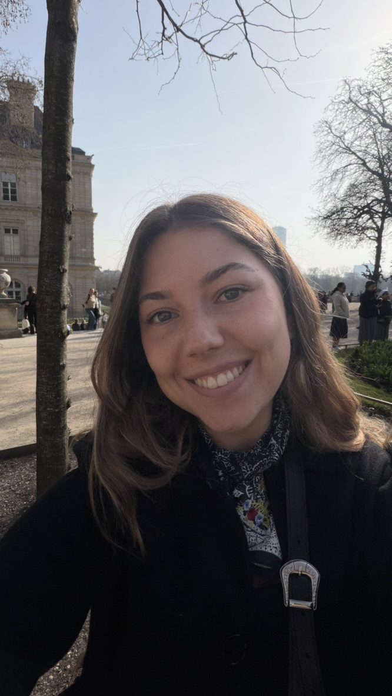
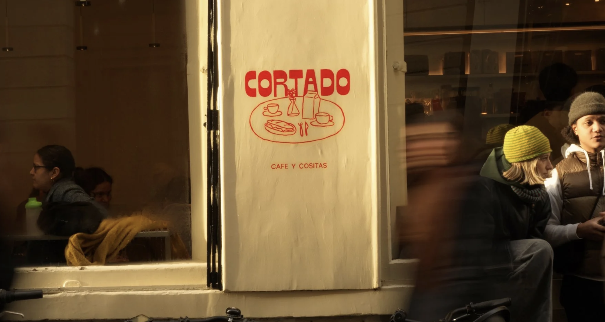
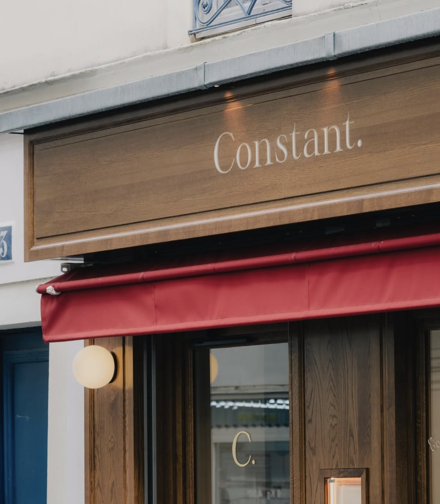
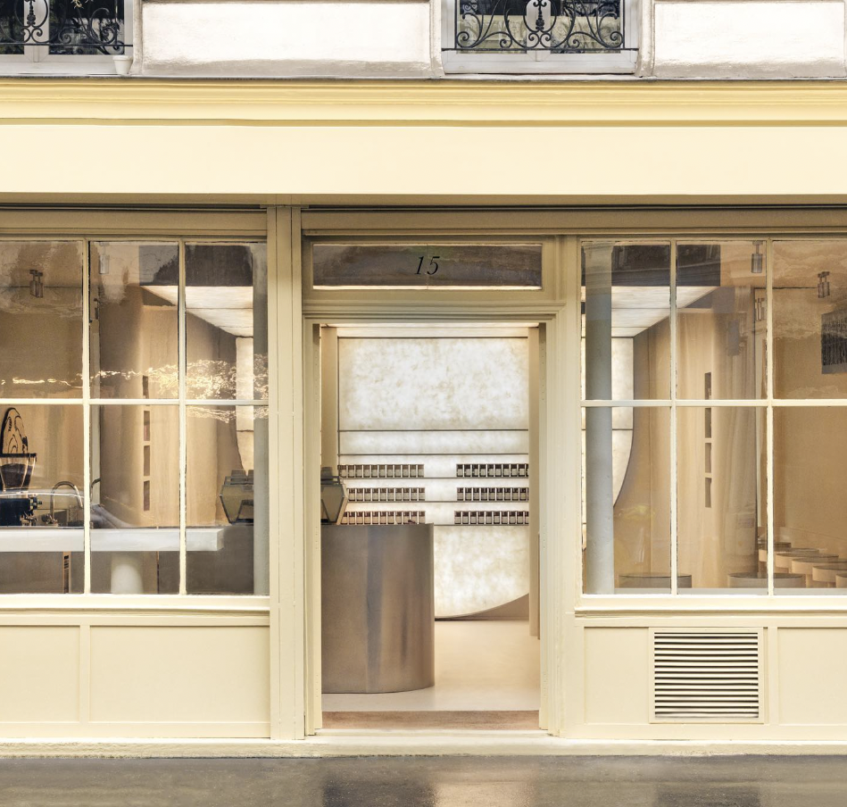
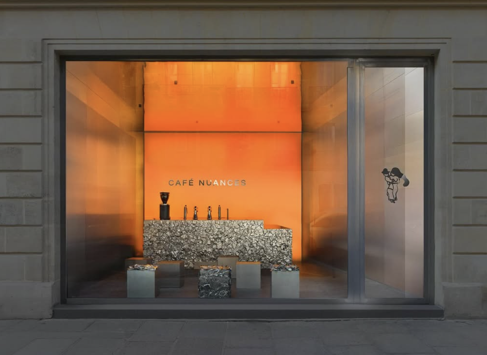
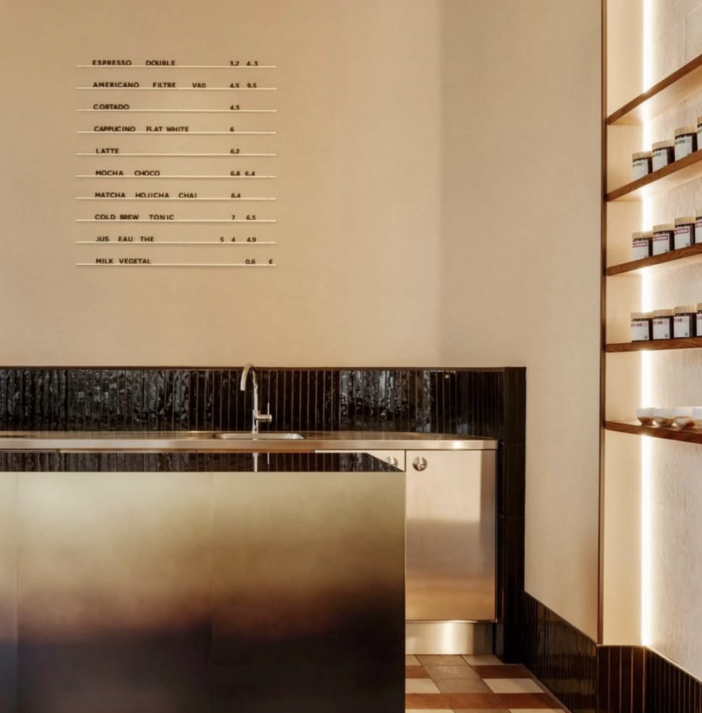
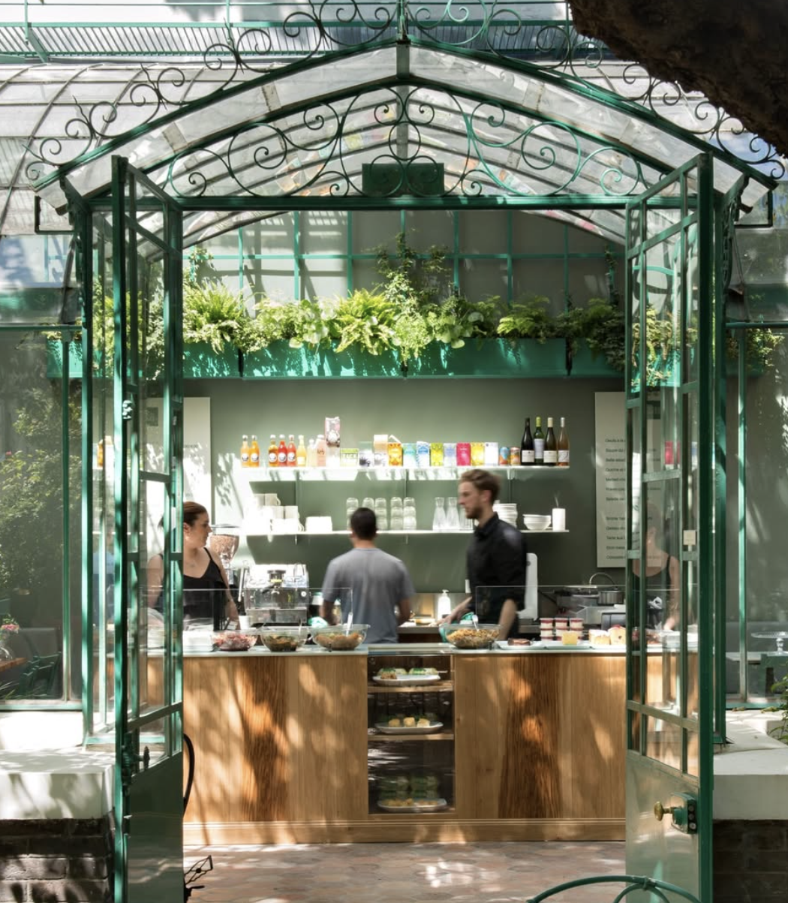

Sip Society helps you discover cafés that are not only good for coffee, but also for studying, working, reading or having a calm moment in the city.
Find warm and quiet cafés where you can sit for hours without feeling rushed.
Discover places with Wi-Fi, plugs, good tables and the right amount of background noise.
Filter by mood: study date, solo coffee, catch-up with friends or creative reset.

Sip Society was created by Melina, a digital technology student who loves coffee, design and building useful experiences with a warm aesthetic.
Real places, curated with care. Filter by what you need today.

Social
Solo
Study
Solo
Study
Remote